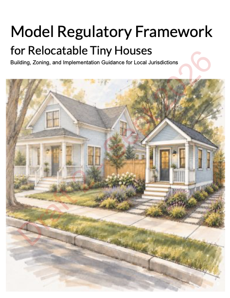

RELOCATABLE TINY HOUSES
Small homes.
Clear pathways.
Building, zoning, and implementation guidance to help communities recognize relocatable tiny houses as dwellings.
Our Model Regulatory Framework is currently in development. We welcome focused review inquiries from interested jurisdictions, building officials, planners, and technical or housing professionals.
Interested in reviewing the framework for your community?
Contact MacyPlease include your organization or jurisdiction and area of interest.
